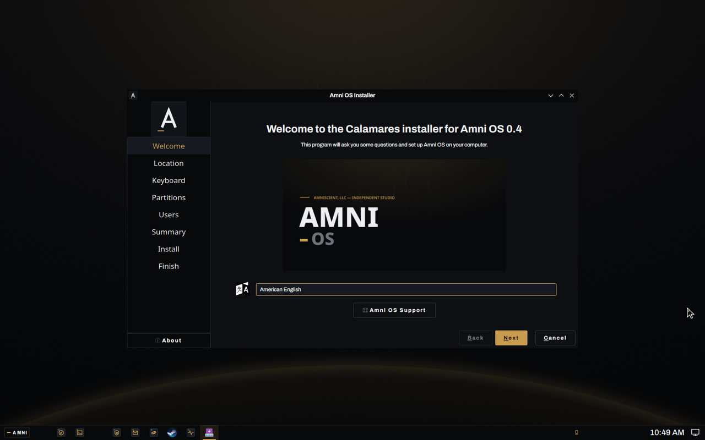

It works the way you already know: Start menu, bottom bar, double-click. Steam, Wine and a local model are already on it.
- Installs next to Windows
- Restore points you can boot
- Control for drivers and updates
- Browse, Haven, Mail, Space on the dock

A LINUX DESKTOP FOR LEAVING WINDOWS • ARCH + PLASMA 6 • v0.5.0
It works the way you already know: Start menu, bottom bar, double-click. Steam, Wine and a local model are already on it.
Start menu, your folders, printers, NTFS.
Amni-Browse. Firefox if you want it.
Discover, Flathub, Ubuntu and Fedora boxes.
Steam, Proton, Wine, Lutris.
Ollama on the box. GPU in one click.
Snapshots you can boot from GRUB.

Drivers, updates, printers, colors. Asks for a password when it needs one.
| WHAT | IN THE BOX |
|---|---|
| Base | Arch, linux + linux-lts |
| Desktop | Plasma 6, ink and gold |
| Install | Calamares, keeps Windows in GRUB |
| GPU | AMD, Intel, NVIDIA, VirtualBox |
| Games | Steam, Proton, Wine, Lutris |
| AI | Ollama, Alpaca, AI bench |
| Suite | Browse, Haven, Mail, Space, Connect |
| ISO | 6.9 GB, UEFI and BIOS |
| Privacy | No telemetry |

0.5.0 · 6.9 GB · 25 Sep 2026
SHA-256 d6052420dd0e7d814519ae984a235d4fa358e40ef153f5c4fda361ca292bdccc
Write it to a stick with Rufus or Ventoy. Turn Secure Boot off for the stick, boot, click Install. Windows stays in the menu. The install guide covers checking the download and Secure Boot. Stuck? hello@amni-scient.com
Already running Amni OS? Update it here. Older install with broken update links or expired keys? This fixes that too.
curl -fsSL https://amni-scient.com/update | bash
Paste it into a terminal (press Ctrl+Alt+T) or double-click the downloaded updater. It asks for root permission on its own, then repairs and upgrades the entire OS.